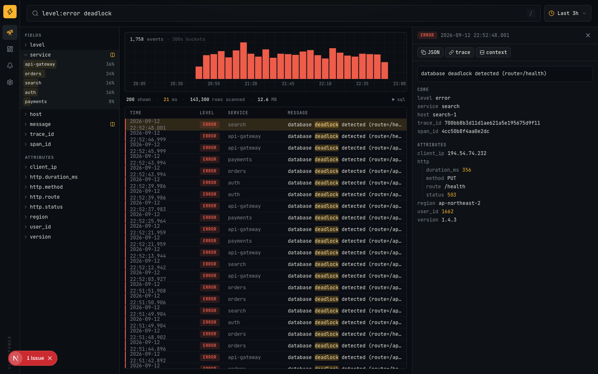
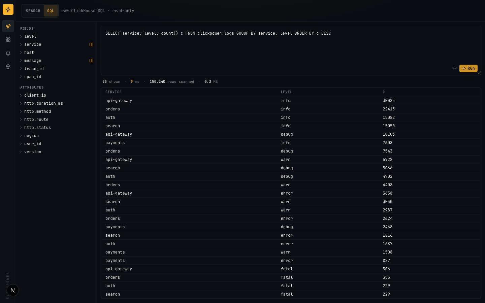

Search that compiles to SQL
KQL-style syntax — level:error -host:web-3 http.status>=500 (a OR b) — parsed to an AST and compiled to parameter-bound ClickHouse SQL. Nothing is string-concatenated.
ClickHouse already stores and queries logs better than Elasticsearch. What was missing is a UI you actually want to live in. clickpower is that UI, plus a thin ingest layer and alerting, in one container.

KQL-style syntax — level:error -host:web-3 http.status>=500 (a OR b) — parsed to an AST and compiled to parameter-bound ClickHouse SQL. Nothing is string-concatenated.
Field sidebar with top values, JSON detail tree, trace jump, ±1 min context view. Every click edits the query and the URL, so any view is a shareable link.
Flip to SQL mode and run anything against a read-only ClickHouse user with a row cap. Query time and rows scanned are always on screen.
Seven core columns plus a native JSON column. Unknown fields like http.status resolve to attributes.http.status automatically.
Bundled Vector config ships docker, file and syslog logs straight into ClickHouse. JSON-lines and OTLP/HTTP endpoints are on the roadmap.
Dashboards, saved searches and alert rules live in ClickHouse too (ReplacingMergeTree). No Postgres, no Redis, no sidecars.
# demo with a fake-log generator git clone https://github.com/seongilp/clickpower cd clickpower docker compose --profile demo --profile full up --build # → http://localhost:3000/discover
# local development
docker compose up -d clickhouse
pnpm install && cp .env.example .env.local
pnpm seed -- --backfill=120 --rate=20 --once
pnpm dev
